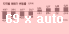

전세대란 스페셜 페이지

지역별 전세 동향


전세대란 타파! 테마 매물 보기
- 지역별 20평대 아파트 전세 찾기
- 신혼부부에게 추천! 빌라 전세 매물
- 특수 학교 근처 전세 찾기
- 아파트보다 저렴한 오피스텔 전세
- 주요 신도시 전세 매물 찾기
- 전세대신 내집마련! 2억 이하 아파트 매매
주요 뉴스
-  기는 집값....매수자 팔짱만 끼고
수도권 14주 연속 하락수도권 집값이 14주 연속 떨어졌다. 지난 한주간 수도권에서는 서울 서호와 종로구, 경기 군포·산본신도시·평택 등 총 5곳만이 매매가가 소폭 올랐고 47곳은 보합.... 해럴드경제 | 2011.07.08- 수도권 전지역 매마가 하락세 해럴드경제 | 2011.07.08
- 기는 집값....매수자 팔짱만 끼고
수도권 14주 연속 하락수도권 집값이 14주 연속 떨어졌다. 지난 한주간 수도권에서는 서울 서호와 종로구, 경기 군포·산본신도시·평택 등 총 5곳만이 매매가가 소폭 올랐고 47곳은 보합.... 해럴드경제 | 2011.07.08- 수도권 전지역 매마가 하락세 해럴드경제 | 2011.07.08